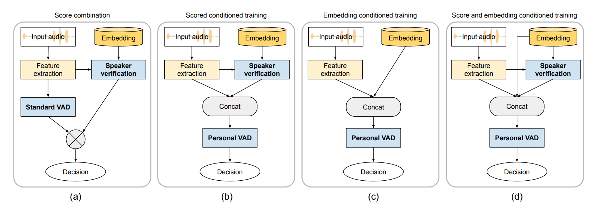

Paper: arXiv
Slides: PDF
Authors: Shaojin Ding *, Quan Wang *, Shuo-yiin Chang, Li Wan, Ignacio Lopez Moreno. (*: Equal contribution.)
Abstract: In this paper, we propose "personal VAD", a system to detect the voice activity of a target speaker at the frame level. This system is useful for gating the inputs to a streaming on-device speech recognition system, such that it only triggers for the target user, which helps reduce the computational cost and battery consumption, especially in scenarios where a keyword detector is unpreferable. We achieve this by training a VAD-alike neural network that is conditioned on the target speaker embedding or the speaker verification score. For each frame, personal VAD outputs the probabilities for three classes: non-speech, target speaker speech, and non-target speaker speech. Under our optimal setup, we are able to train a model with only 130K parameters that outperforms a baseline system where individually trained standard VAD and speaker recognition networks are combined to perform the same task.
System architecture:

Lectures:
Citation:
@inproceedings{Ding2020,
author={Shaojin Ding and Quan Wang and Shuo-Yiin Chang and Li Wan and Ignacio {Lopez Moreno}},
title={{Personal VAD: Speaker-Conditioned Voice Activity Detection}},
year=2020,
booktitle={Proc. Odyssey 2020 The Speaker and Language Recognition Workshop},
pages={433--439},
doi={10.21437/Odyssey.2020-62},
url={http://dx.doi.org/10.21437/Odyssey.2020-62}
}